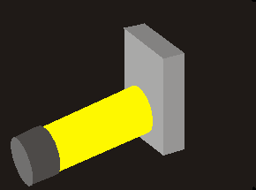
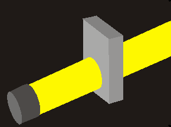
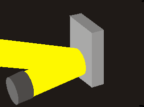

| Kategorie | Absorption | Durchlassen von Licht |
|---|---|---|
| Beschreibung | Wenn ein Lichtstrahl auf einen stark absorbierenden Gegenstand trifft, kehrt der Lichtstrahl nicht zurück. | Wenn ein Lichtstrahl auf ein durchsichtigen Gegenstand trifft, breitet er sich unverändert durch diesen Gegenstand aus. |
| Erklärung | Dies hängt mit der Obeeflächenstruktur des Stoffes zusammen. Ist diese sehr fein, verliert sich das Licht im Stoff und wird nicht zurückgegeben |
|
| Auswirkungen | Fast alle Gegenstände absorbierenden einen Teil des auftreffenden Lichtes, manche absorbieren mehr und geben daher weniger Licht wieder zurück
und erscheinen dadurch dunkler, andere absorbieren weniger und geben daher mehr Licht wieder zurück und erscheinen heller. Manche Gegenstände absorbieren nur bestimmte Lichtsorten (Farben). Die Gegenstände erscheinen in den Restfarben. Absorbiert ein Gegenstand Licht, so erwärmt er sich dadurch. |
Durchsichtige Gegenstände verursachen keinen Schatten. Vollkommen durchsichtige Gegenstände können nicht gesehen werden, aber alle Gegenstände hinter dem durchsichtigem Körper. Einige Gegenstände ändern je nach Einfallswinkel des Lichtes dessen Ausbreitungsrichtung, ohne es zu schwächen. Diese Gegenstände nennt man trotzdem durchsichtig. Gelangt nur ein geringer Teil des Lichts durch einen Körper, so nennt man ihn durchscheinend, da man Gegenstände durch solche Körper nicht mehr klar erkennen kann. |
| Darstellungen |  [18] |  [19] |
regelmäßige Reflexion |
unregelmäßige Reflexion |
|
| Beschreibung | Wenn ein Lichtstrahl auf einen glatten Gegenstand trifft, wird das Licht regelmäßig reflektiert. |
Wenn ein Lichtstrahl auf einen eher rauen Gegenstand trifft, wird das Licht zerstreut. |
| Erklärung | Dies hängt mit der Oberflächenstruktur des Stoffes zusammen. Ist diese sehr glatt, so kann das Licht leicht reflektiert werden. |
Dies hängt mit der Oberflächenstruktur des Stoffes zusammen. Ist diese eher rau, so wird das Licht an den verschiedenen Steigungen des Materials reflektiert. |
| Auswirkungen | Gegenstände, die das Licht regelmäßig reflektieren, werfen einen Schatten. |
Gegenstände, die das Licht streuen, können von überall im Raum gesehen werden und sorgen für einen Schatten. |
| Darstellungen |  [20] |  [21] [21] |
Häufig treten mehrerer dieser genannten Phänomene gleichzeitig auf. Ein Stein z.B. absorbiert ein Teil des Lichtes und streut den anderen Teil. [22]